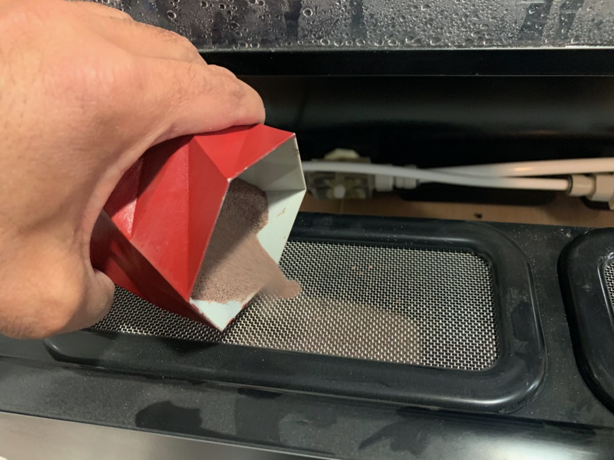

<!DOCTYPE html>
<html lang="en"></html>
<head>
  <meta charset="utf-8">
  <meta content="IE=edge" http-equiv="X-UA-Compatible">
  <meta content="width=device-width, initial-scale=1" name="viewport">
  <title> Rafael Rebolleda — Fab Academy 2020 Documentation</title>
  <!-- Google Fonts-->
  <link rel="stylesheet" href="https://fonts.googleapis.com/css?family=Catamaran&amp;display=swap">
  <link rel="stylesheet" href="../css/main.css">
</head>
<body> 
  <nav>
    <header>
      <ul>
        <li>Rafael Rebolleda</li>
        <li>ESNE (+ LEON)</li>
        <li>Madrid, Spain</li>
      </ul>
      <p class="bio">CX consultant and professor. Single, semi-remote Fab Acadeny student.</p>
    </header>
    <ol>
      <li><a class="red" href="../">About me</a></li>
      <li><a class="blue" href="../FP/">Final Project</a></li>
      <li><a class="blue" href="../DEV/">Project Development</a></li>
    </ol>
    <h1>Assignments</h1>
    <ol> 
      <li><a href="../W1/">Principles & Practices</a></li>
      <li><a href="../W2/">Computer Aided Design</a></li>
      <li><a href="../W3/">Computer Controlled Cutting</a></li>
      <li><a href="../W4/">Electronics Production</a></li>
      <li><a href="../W5/">3D Scan + Printing</a></li>
      <li><a href="../W6/">Electronics Design</a></li>
      <li><a href="../W7/">Computer Controlled Machining</a></li>
      <li><a href="../W8/">Embedded Programming</a></li>
      <li><a href="../W9/">Input Devices      </a></li>
      <li><a href="../W10/">Applications & Implications</a></li>
      <li><a href="../W11/">Output Devices</a></li>
      <li><a href="../W13/">Intellectual Property</a></li>
      <li><a href="../W15/">Molding & Casting</a></li>
      <li><a href="../W16/">Wildcard: Waterjet CCC</a></li>
    </ol>
  </nav>
  <main>
    <h1>W16: Wildcard Week: Waterjet cutting</h1>
    <p>In the wildcard week I wanted to experiment with cutting harder materials, like stainless steel. Fortunately the FabLab had just acquiered a <a href="https://www.wazer.com/">Wazer desktop waterjet cutter</a>, so I thought I'd give that a try.</p>
    <h2>The idea</h2>
    <p>A pickguard is typically made out layered plastic, and serves as support for electonics, to protect a guitar's body paintjob and wood and to give teh guitar a personality. Here's a classic Fender Stratocaster with a white pickguard:</p>
    <p>I thought I could make myself a Strat pickguard stencil that I could later use as a template with softer materials or even paper blueprints.</p>
    <h2>The design</h2>
    <p>I went for a stock pickguard for single coils, with no modifications. This would be easy to find and trace and would be useful in many models.</p>
    <p>The Wazer only takes DXF files, so I had to go through AutoCAD. Oddly enough, AtuoCAD drew some very rough curves (see circles for holes), and I had to "soften" them again there:</p>
    <h2>Preparing the stock</h2>
    <p>I would be using 1mm thick stainless steel cut from a long sheet.</p>
    <p>The sheet covers all the cutting area in the Wazer</p>
    <p>Fixing the stock to the bed with screws surrounding the stock.</p>
    <p>The Wazer comes with a piece of plastic to zero-in on Z-axis:</p>
    <p>Finally, check there's enough abrasive loaded:</p>
    <h2>Configuring the Wazer for cutting</h2>
    <p>I have to say the Wazer's software is fairly basic and stripped-down, compared to what I've experienced in CCM.</p>
    <p>Once the file is imported through the web interface, the first thing to is to position it on the bed. Since I put a stock that covers the whole bed, this wasn't much of an issue. I found it surprising though that there see to be no option to zero the head, and all that's left for smaller parts is the grid that matches the bed, represented by white lines.</p>
    <p>Next, the Wazer asks for the material. In this cases 1mm stainless steel:</p>
    <p>There's an option to choose the cutting path. For my purposes, stright on top was fine.</p>
    <p>The software allows for automatic or manual tab placement. I ended up not using tabs after all, as they seemed too complicated to remove from such a hard stock.</p>
    <p>Finally, thw Wazer allows for different cutting quality levels. I went with fine as the estimated job time difference wasn't that much. </p>
    <h2>Cutting the piece</h2>
    <p>As it's often the case, I had to cut several times to fnish the piece, as there's <em>always</em> something that comes up.</p>
    <video src="wjc_0.mp4" autoplay muted controls loop></video>
    <video src="wjc_16.mp4" autoplay muted controls loop></video>
    <video src="wjc_15.mp4" autoplay muted controls loop></video>
    <h3>Running out of abrasive</h3>
    <p>The first run was going alright, but eventually the Wazer ran out of abrasive. I'm surprised it didn't stop this time around, as this happened again in another run and I had the chance to fill it in. In this case, however, it continued to cut with actually cutting, so I ended up cancelling the process.</p>
    <p>In that image I also saw the tab size, and that's why I ended up removing them from the cutting process, especially with the regards to the holes.</p>
    <h3>Misplacing the stock</h3>
    <p>For the following run I tried to cut a smaller stock and eyeball its position based on the cut marks and the grid on the bed. The image speaks for itself :D</p>
    <p>This run however gave me the opportunity to come across another issue that may arise during the cutting process.</p>
    <h3>The thrid time's the charm</h3>
    <p>I cut another piece of stock, this time filling again the whole bed.</p>
    <video src="wjc_20.mp4" autoplay muted controls loop></video>
    <p>The Wazer does eat a lot of abrasive. This time around I did get a message and had the opportunity to refill and continue:</p>
    <p>After that hiccup, the cut was complete with no further issues:</p>
    <video src="wjc_23.mp4" autoplay muted controls loop></video>
    <p>The estimated cut time was very close to reality:</p>
    <p>The bed ends up pretty dirty, but it's easy to clean with water</p>
    <h2>The final piece</h2>
    <h2>Files</h2>
    <ul>
      <li><a href="pickguard.pdf">Pickguard (Illustrator PDF) </a></li>
      <li><a href="pickguard.svg">Pickguard (SVG) </a></li>
      <li><a href="pickguard.dxf">Pickguard (AutoCAD DXF) </a></li>
    </ul>
  </main>
  <footer>
    <hr>
    <p><a rel="license" href="http://creativecommons.org/licenses/by-nc/4.0/"></a><br />This work is licensed under a <a rel="license" href="http://creativecommons.org/licenses/by-nc/4.0/">Creative Commons Attribution-NonCommercial 4.0 International License</a>.</p>
  </footer>
</body>